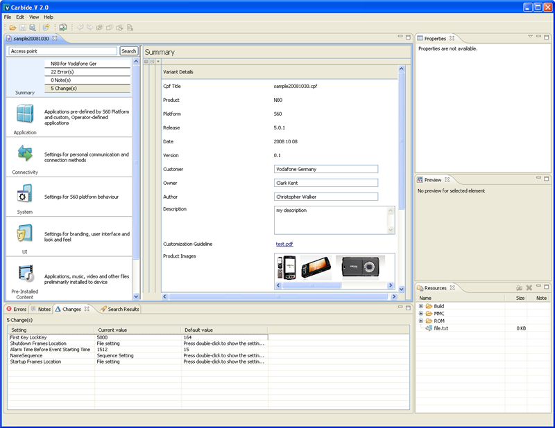
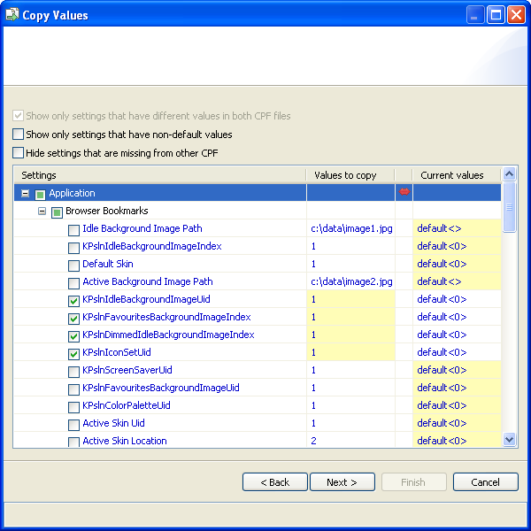
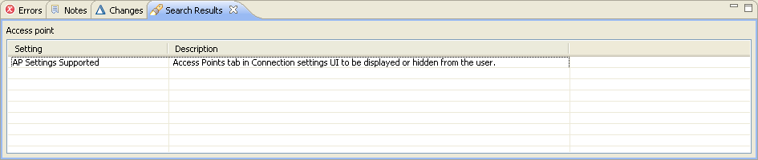
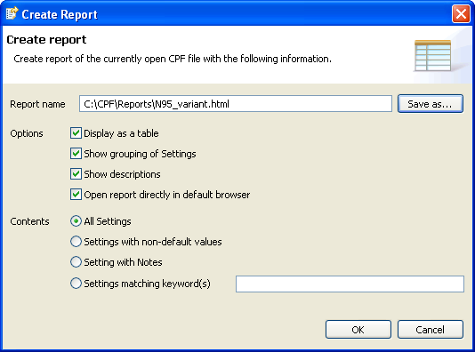
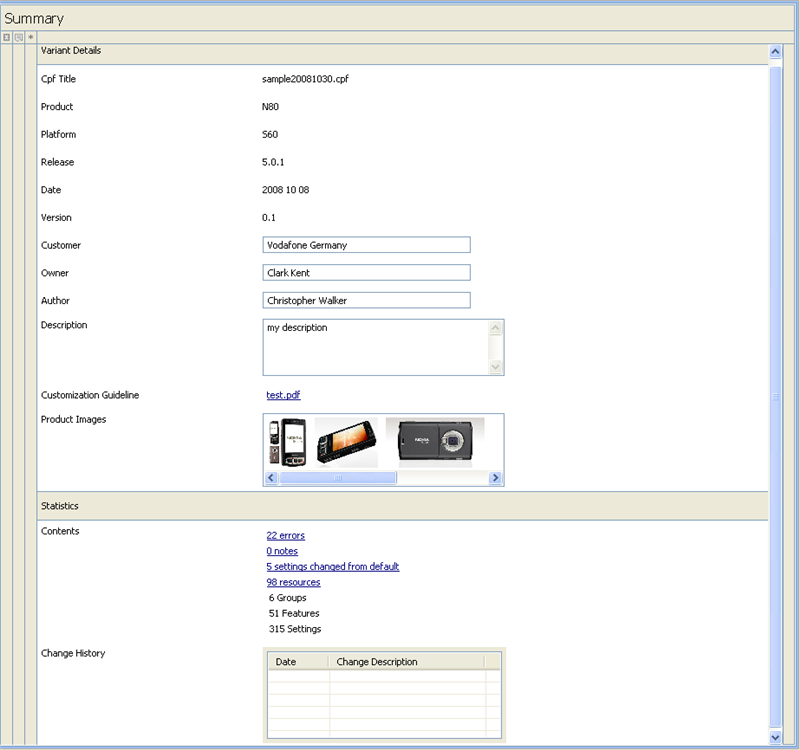
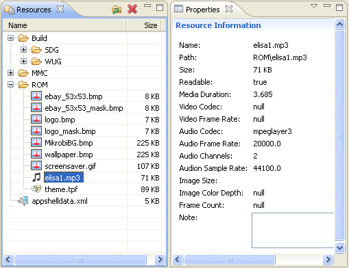
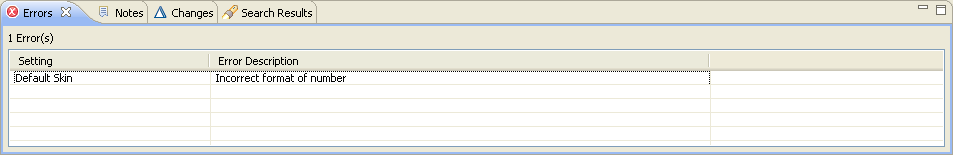
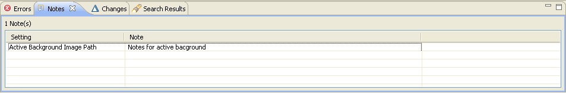
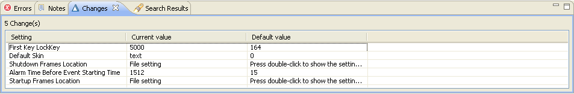

Working with Variant Proposals
Starting Carbide.v
Situation: You want to open Carbide.v.
-
Click the Carbide.v icon in your Windows Start menu or desktop.
Carbide.v opens. The panes on the screen are empty before you open a software variant proposal.
Opening a Variant Proposal
Situation: You want to view or work on a software variant proposal.
- Select File - Open... in the menu or click the toolbar Open icon .
- Browse to the location of the CPF file (the software variant proposal), select the CPF and click Open.
The software variant proposal opens up in Carbide.v as a separate tab. and populates the panes on the screen. The newly opened tab displays the CPF file name that you opened.
You may keep several CPF files open in Carbide.v at the same time. you can switch between them clicking any of the tabs that are open.

Saving a Variant Proposal
Situation: you want to save your work.
-
As in any Windows software, select File - Save in the menu, click the Save icon or press Ctrl-S.
Carbide.v saves the software variant proposal as one CPF file.
Saving a Variant Proposal as a Different Version
Situation: you want to save your work with a different filename. You may want to do this e.g. in case if you want to "branch out" a different version of your CPF.
- Select File - Save as... in the menu, or click the Save as... icon.
- Carbide.v opens the Save as... dialogue.
- Browse to the target folder in which you want to save your software variant proposal.
- Type a filename and click Save.
- Type your notes about your software variant proposal and click OK.
Carbide.v saves the software variant proposal as one CPF file. The tab name of the opened CPF has changed to indicate you the name of the newly saved CPF.
Copying Setting Values
Situation: You want to copy setting values from an earlier CPF to the one you are working on. Carbide.v permits copying setting values from CPFs that you have stored other CPFs.
- Select or click the Copy Values icon
- Carbide.v opens a wizard dialogue popup. Browse to the CPF from which you want to copy values and click Next.
- Tick the filter checkbox options to limit the settings to be compared.
-
Tick the settings that you want to copy from the source CPF to the one you are filling out and click [Finish].
If you want to continue copying values from another CPF, click Continue to proceed back to step 2.
Carbide.v populates the settings with the values that you selected to be copied from the earlier CPF(s).

Searching for Settings
Situation: You want to find settings with a known name or description in a CPF.
- Type a string (no wildcards) in the search box and click [Search].
- Carbide.v lists the settings that match your search string in the Search Results view..
- Double-click a setting in the Search Results view that you want to see.
Carbide.v opens the software proposal form in the place where the setting is located.

Creating a report
Situation: You want to create a report of the currently opened software variant proposal
- Launch the report wizard clicking the Report button.
- In the report wizard filter out the report output and grouping
- Write/Browse for the output path and name of the report. Press OK button to finish the wizard.
Carbide.V generates a report as a single web page file.
In case the user has marked the particular option the report is opened directly in default web browser,
otherwise system just informs the user that the report was successfully created in the specified location.

Viewing Summary
Situation: You want to see the overview of the software variant proposal and the information related to it.
-
click the Summary icon in the navigator.
You can see all the variant details (e.g. variant name, customer, variant version, product images) and variant statistics(e.g. counts of settings changed from default, possible errors, number of notes appended to settings and more).
You can access the settings with notes by clicking respective row, as well as settings with erroneous values.
By clicking on the statisctics you will see the particular lists of settings with the errors, changes and notes.
Viewing Change History
Situation: You want to get an overview of the changes made to the software variant proposal.
-
click the Summary icon in the navigator.
You can see the change history as a list in the Summary. The change history text comes from the note the user has written in the Save as... dialog.

Properties View
Properties of Resources Library items
Situation: You want to see details of an image, audio or video file located in your Resources library. Carbide.v can show details for any file, but it can only provide you details on supported image, audio and video file types.
The following image, audio and video formats are supported for preview:
- Image formats: svg, bmp, png, jpg, gif
- Audio formats: mp3
- Video formats: mpeg, avi
To view the properties for a resource, do the following:
- Click the Resources library view to make it active.
- In the Resources library select an image, audio or video file you want to see the details of
The Properties view shows appropriate image, audio or video file details
(depending on type of item system shows properties like image size, color depth, audio and video codecs, etc.)
Properties of settings
Situation: You want to see details of a setting like description, allowed values, etc.
- Select a setting you want to see the details of
The Properties view shows appropriate setting details including settting's description, value ranges, default or notes
Appending notes via Properties view
Situation: You want to append a note for a setting via propeties view.
- see section Appending Notes to Settings for more details

Viewing of Errors
Situation: You want to get an overview of all the possible errors made in the software variant proposal.
- Check if the
 Errors view is visible.
Errors view is visible. - if not, you can toggle the view on by ticking View > Errors menu item.
- Click the Errors view to make it active.
You can see a list of settings with error descriptions.
You can access the settings with the errorneous value by clicking respective row from the list.
You can access the settings with the errorneous value by clicking respective row from the list.

Viewing of Notes
Situation: You want to get an overview of all the notes appended to settings in the software variant proposal.
- Check if the Notes view is visible.
- if not, you can toggle the view on by ticking View > Notes menu item.
- Click the Notes view to make it active.
You can see a list of settings with notes.
You can access the settings with the appended note by clicking respective row from the list.
You can access the settings with the appended note by clicking respective row from the list.

Viewing of Changes
Situation: You want to get an overview of all the settings with non-default values in the software variant proposal.
- Check if the Changes view is visible.
- if not, you can toggle the view on by ticking View > Changes menu item.
- Click the Changes view to make it active.
You can see a list of settings showing their default and current values.
You can access the settings with changes by clicking respective row from the list.
You can access the settings with changes by clicking respective row from the list.
